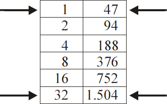

Algumas civilizações utilizavam diferentes métodos para multiplicar
dois números inteiros positivos. Por volta de 1400 a.C., os egípcios
utilizavam uma estratégia para multiplicar dois números que consistia
em dobrar e somar. Por exemplo, para calcular 47 × 33, o método pode
ser descrito do seguinte modo:
-
escolha um dos fatores; por exemplo, 47;
-
na 1.ª linha de uma tabela, escreva o número 1 na 1.ª coluna e o
fator escolhido, na 2.ª coluna;
-
em cada linha seguinte da tabela, escreva o dobro dos números
da linha anterior, até encontrar, na 1.ª coluna, o menor número
cujo dobro seja maior ou igual ao outro fator, no caso, 33;

-
selecione os números da 1.ª coluna cuja soma seja igual a 33,
conforme indicado na tabela, ou seja, 1 + 32 = 33;
-
adicione os números correspondentes da 2.ª coluna, ou seja,
47 + 1.504 = 1.551;
-
tome como resultado da multiplicação o valor 1.551.
Com base nessas informações, analise as asserções a seguir.
Utilizando o método egípcio, é possível multiplicar quaisquer dois
números inteiros positivos,
PORQUE
todo número inteiro positivo pode ser escrito como uma soma de
potências de 2.
A respeito dessa afirmação, assinale a opção correta.
-
As duas asserções são proposições verdadeiras, e a segunda é uma
justificativa correta da primeira.
-
As duas asserções são proposições verdadeiras, mas a segunda não
é uma justificativa correta da primeira.
-
A primeira asserção é uma proposição verdadeira, e a segunda
é falsa.
-
A primeira asserção é uma proposição falsa, e a segunda
é verdadeira.
-
Ambas as asserções são proposições falsas.